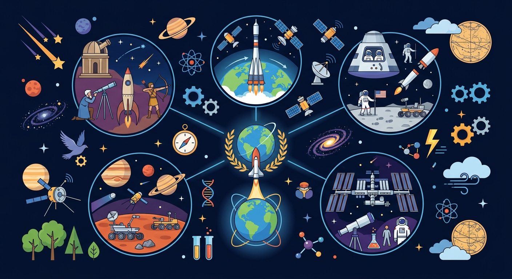

从人造卫星到载人飞船，从月球漫步到空间站生活——航天技术让人类走出地球家园。

🎯 能说出人类航天探索的3个主要阶段
🎯 能判断不同航天器的用途类型
🎯 能分析载人航天的基本技术挑战
❓ 为什么火箭要造得那么高？
❓ 宇航员在太空怎么上厕所？
❓ 火星车会不会被外星人偷走？
学完这一课，这些问题你都能自信地回答。
人类首个进入太空的宇航员是？
下列哪个不是航天器？
选择或输入后，这节课会围绕你的问题展开。
气象卫星主要用于？
先选一个，错了正好暴露你的前概念，我们一起纠正。
20 世纪中叶以来，人类先后发射人造卫星、实现载人航天、登上月球、建造空间站，并开展火星等深空探测。每一次突破都依赖火箭推力、轨道控制和生命保障等关键技术。
航天探索拓宽了人类视野：我们得以从太空俯瞰地球，研究宇宙起源，发展通信、导航、遥感等技术，服务天气预报、灾害监测和科学研究。
通信卫星转发电视、电话信号；导航卫星（如北斗）帮助定位；遥感卫星拍摄地表，监测环境。载人飞船运送宇航员；空间站供长期在轨实验与生活；探测器飞往月球、火星采集数据。
火箭需克服地球引力，常采用多级火箭：前级燃料耗尽后脱落，减轻重量，让后级把载荷送入预定轨道。
把卡片拖到近地应用 / 载人航天 / 深空探测三类。
拖完 6 项后自动判分。
航天探索用火箭把探测器、卫星、载人飞船送入太空，帮助我们认识地球、月球和更远的天体。中国有神舟载人飞行、嫦娥探月、空间站建设等成就。航天任务需要解决动力、生命保障、通信和安全返回等问题，是科学与工程的结合。
分析航天新闻时先问目标是什么，再问遇到缺氧、失重、高低温等哪些挑战，最后看用了什么技术。
常见误区：常见误区是认为太空中也有空气可以呼吸，或把科幻电影情节当成已实现技术。
火箭能把飞船送入太空，主要是利用？
载人航天中，下列哪一项是必须考虑的生命保障问题？
And：学生知道气球放气后会乱飞
But：不明白数百吨火箭如何克服地球引力
Therefore：理解反作用力在航天中的关键应用
火箭升空靠的是反作用力，就像气球放气后会反方向飞走一样。燃料燃烧产生高温气体向下喷出，根据牛顿第三定律，火箭就获得向上的推力。比如长征五号火箭，每秒要燃烧2000公斤燃料，产生的推力相当于1000辆小汽车同时加速的力量！随着燃料消耗，火箭会逐步变轻，更容易加速。
🌍 玩滑板时用力向后蹬地，滑板就会向前滑行；游泳时用手向后划水，身体就能前进。这些都是反作用力的例子，和火箭原理一样。
下列哪个现象和火箭升空原理不同？
将航天系统分解为运载工具、空间设备、地面控制三部分
火箭通过反作用力冲破地球引力，像踩滑板向后推墙
对比卫星与空间站：卫星像自动贩卖机，空间站像移动实验室
观看天宫课堂太空转身实验，观察角动量守恒现象
设计月球基地需考虑昼夜温差300℃（相当于烤箱到冰柜）
下列关于太空环境的描述，哪项是正确的？
探究航天器设计过程中面临的主要挑战。
关于人类航天探索，哪种说法最科学？
选一个并查看反馈。
先独立作答，再点选项查看对错与错因。
人类首次登上月球是在哪一年？
下列哪项不属于航天器的组成部分？
国际空间站是由哪些国家共同建造的？
____是第一个进入太空的地球生物。
答案：莱卡
1957年，苏联将一只名叫莱卡的狗送入太空，成为第一个进入太空的地球生物。
中国第一颗人造卫星____于1970年发射成功。
答案：东方红一号
1970年4月24日，中国成功发射了第一颗人造卫星东方红一号，标志着中国航天事业的起步。
✅ 太空有微重力，空间站其实在持续下落
💡 混淆'失重'与'无重力'
✅ 目前仅猎鹰9号等部分火箭可回收第一级
💡 将航天技术理想化
口诀：一箭穿云破九天，三步绕落回循环
类比：火箭发射像吹气球：燃料燃烧产生气体（吹气），喷出气体推动火箭（气球飞走）
【升学题】长征五号运载火箭主要承担什么任务？
【迁移题】月球车玉兔号遇到月尘故障，说明月球环境有什么特点？
【真题】下列航天成就按时间排序正确的是：①天问一号 ②神舟五号 ③东方红一号
点击节点跳转到对应章节；可切换布局。